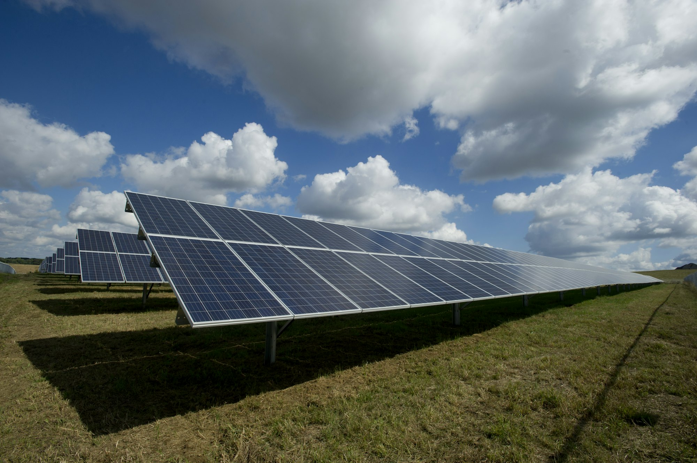
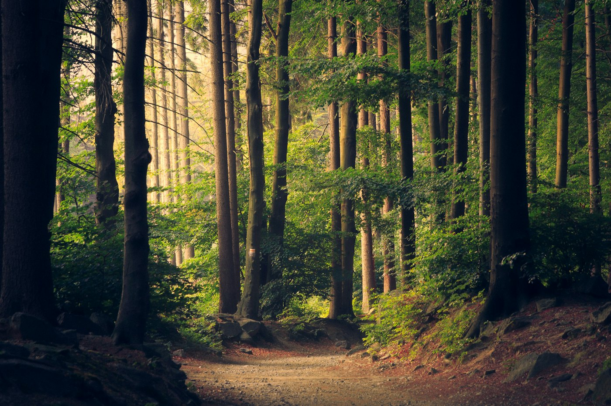
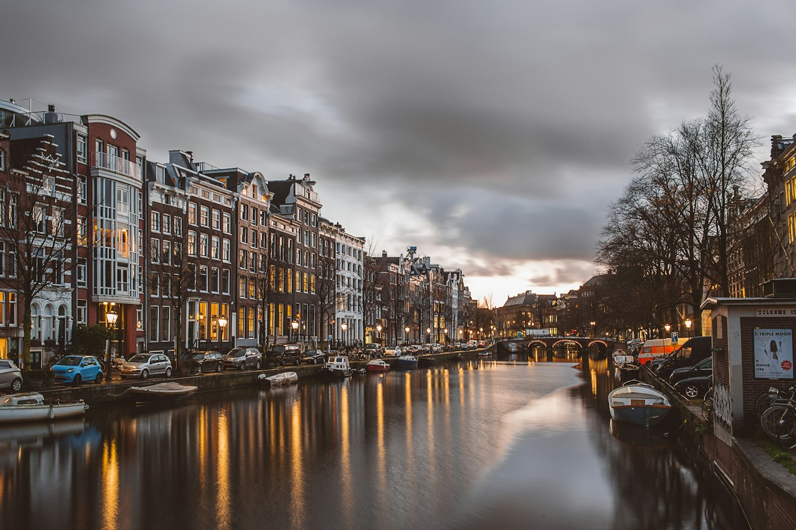

<title>In2Impact</title>
<meta name="claude:viewport-fit-sides" content="cover">
<meta name="description" content="AERIUS-stikstofberekeningen en MKI-berekeningen in heel Nederland, vanuit Noord-Nederland, voor bruggen, kademuren, wegen, dijken en andere GWW-projecten, energietransitie en bouw, met advies en ondersteuning richting de vergunningverlener.">
<link rel="canonical" href="https://in2impact.nl/">
<meta name="keywords" content="AERIUS berekening, stikstofberekening, MKI berekening, DuboCalc, MPG, Nederland, Noord-Nederland, Brabant, Friesland, Groningen, Drenthe, GWW, infra, bruggen, viaducten, kademuren, damwanden, wegen, fietspaden, dijken, waterwerken, energietransitie, zonnepark, windpark, kabeltracé, natuurvergunning">
<link rel="icon" href="data:image/svg+xml,%3Csvg%20xmlns%3D%22http%3A//www.w3.org/2000/svg%22%20viewBox%3D%220%200%2048%2048%22%3E%3Cpath%20d%3D%22M6%2042%20C6%2018%2020%206%2044%204%20C44%2028%2032%2042%206%2042Z%22%20fill%3D%22%231f9d55%22/%3E%3Cpath%20d%3D%22M10%2038%20L19%2029%20L24%2032%20L36%2016%22%20fill%3D%22none%22%20stroke%3D%22%23ffffff%22%20stroke-width%3D%223%22%20stroke-linecap%3D%22round%22%20stroke-linejoin%3D%22round%22/%3E%3Cpath%20d%3D%22M30%2015%20L36.5%2015.5%20L36%2022%22%20fill%3D%22none%22%20stroke%3D%22%23ffffff%22%20stroke-width%3D%223%22%20stroke-linecap%3D%22round%22%20stroke-linejoin%3D%22round%22/%3E%3C/svg%3E">
<link rel="preconnect" href="https://fonts.googleapis.com">
<link rel="preconnect" href="https://fonts.gstatic.com" crossorigin>
<link rel="stylesheet" href="https://fonts.googleapis.com/css2?family=Mulish:wght@400;500;600;700;800&display=swap">
<style>
/* Layout: beeldgedreven ingenieurssite. Brede polder-hero, gecentreerde intro, daarna wisselende blokken tekst/illustratie per dienst, blauwe contactband, donkere footer. Bewust één licht thema. */
:root{
  color-scheme:light;
  --ink:#1c2a33;
  --text:#56646d;
  --paper:#ffffff;
  --tint:#f3f7f5;
  --line:#e2e8e5;
  --green:#1f9d55;
  --green-dark:#178049;
  --green-soft:#e6f4ec;
  --blue:#1c5a94;
  --blue-dark:#164a7a;
  --night:#1b252b;
  --font:"Mulish","Segoe UI",system-ui,-apple-system,sans-serif;
  --wrap:1180px;
}
*{box-sizing:border-box}
html{scroll-behavior:smooth}
body{background:var(--paper);color:var(--text);font:400 17px/1.7 var(--font);-webkit-font-smoothing:antialiased}
h1,h2,h3{font-family:var(--font);color:var(--ink);line-height:1.15;margin:0;text-wrap:balance}
h2{font-size:clamp(1.7rem,1.2rem + 1.6vw,2.5rem);font-weight:800;letter-spacing:-.01em}
h3{font-size:1.15rem;font-weight:700}
p{margin:0}
a{color:var(--green)}
:focus-visible{outline:3px solid var(--green);outline-offset:3px;border-radius:4px}
.wrap{max-width:var(--wrap);margin:0 auto;padding-left:max(24px,env(safe-area-inset-left,0px));padding-right:max(24px,env(safe-area-inset-right,0px))}
@media (max-width:480px){.wrap{padding-left:max(16px,env(safe-area-inset-left,0px));padding-right:max(16px,env(safe-area-inset-right,0px))}}
.kicker{font-size:.8rem;font-weight:800;letter-spacing:.14em;text-transform:uppercase;color:var(--green)}
.rule{display:block;width:56px;height:4px;border-radius:2px;background:var(--green);margin:18px 0 0}
.center{text-align:center}
.center .rule{margin-left:auto;margin-right:auto}

/* Header */
body::before{content:"";position:fixed;inset:0 0 auto;height:env(safe-area-inset-top,0px);z-index:30;background:var(--paper)}
.site-header{position:sticky;top:env(safe-area-inset-top,0px);z-index:20;background:var(--paper);box-shadow:0 1px 0 var(--line)}
.site-header .wrap{display:flex;align-items:center;justify-content:space-between;gap:16px;min-height:78px;flex-wrap:wrap}
.brand{display:flex;align-items:center;gap:12px;text-decoration:none;color:var(--ink);font-weight:800;font-size:1.15rem;line-height:1.1}
.brand svg{width:42px;height:42px;flex:none}
.wordmark{font-size:1.45rem;letter-spacing:-.02em}
.wordmark b{color:var(--green);font-weight:800}
.brand small{display:block;font-weight:600;font-size:.72rem;letter-spacing:.16em;text-transform:uppercase;color:var(--green);margin-top:4px}
nav ul{display:flex;gap:4px;list-style:none;margin:0;padding:0;flex-wrap:wrap;align-items:center}
nav a{display:block;padding:8px 14px;text-decoration:none;color:var(--ink);font-weight:700;font-size:.97rem;border-bottom:2px solid transparent}
nav a:hover,nav a[aria-current="page"]{color:var(--green);border-bottom-color:var(--green)}
nav a.nav-cta{background:var(--green);color:#fff;border-radius:999px;padding:10px 20px;margin-left:8px;border:0}
nav a.nav-cta:hover{background:var(--green-dark);color:#fff}
@media (max-width:780px){nav{width:100%;padding-bottom:12px}nav a{padding:6px 10px;font-size:.92rem}nav a.nav-cta{margin-left:0;padding:8px 16px}}

/* Hero */
.hero{position:relative;isolation:isolate;overflow:hidden;background:#1d5a87;color:#fff}
.hero-art{position:absolute;inset:0;width:100%;height:100%;z-index:-2;object-fit:cover;object-position:60% 60%}
.hero::after{content:"";position:absolute;inset:0;z-index:-1;background:linear-gradient(90deg,rgba(10,32,52,.8) 0%,rgba(10,32,52,.55) 40%,rgba(10,32,52,.05) 72%)}
@media (max-width:760px){.hero::after{background:linear-gradient(180deg,rgba(9,34,56,.8),rgba(9,34,56,.55))}}
.hero .wrap{padding-block:clamp(96px,13vw,170px) clamp(104px,14vw,190px)}
.hero .kicker{color:#bff0d2}
.hero h1{color:#fff;font-size:clamp(2.9rem,1.7rem + 5vw,5.6rem);font-weight:800;letter-spacing:-.02em;line-height:1.02;margin-top:16px;max-width:12ch}
.hero-lead{max-width:33rem;margin-top:24px;font-size:clamp(1.05rem,1rem + .35vw,1.25rem);color:rgba(255,255,255,.92)}
.hero-actions{display:flex;flex-wrap:wrap;gap:14px;margin-top:36px}
.btn{display:inline-flex;align-items:center;gap:10px;padding:14px 26px;border-radius:999px;font:800 1rem/1.2 var(--font);text-decoration:none;transition:background-color .15s,color .15s,border-color .15s}
.btn svg{width:18px;height:18px;flex:none}
.btn-green{background:var(--green);color:#fff}
.btn-green:hover{background:var(--green-dark)}
.btn-line{border:2px solid #fff;color:#fff}
.btn-line:hover{background:#fff;color:var(--ink)}
.btn-white{background:#fff;color:var(--blue)}
.btn-white:hover{background:var(--green-soft)}

/* Intro */
section.block{padding-block:clamp(72px,9vw,112px)}
.intro{max-width:780px;margin:0 auto}
.intro h2{margin-top:12px}
.intro p{margin-top:22px;font-size:1.12rem}
.usp{display:grid;grid-template-columns:repeat(3,minmax(0,1fr));gap:28px;margin-top:56px;text-align:left}
.usp div{display:grid;gap:8px;align-content:start}
.usp svg{width:44px;height:44px;color:var(--green)}
.usp p{font-size:.98rem}
@media (max-width:820px){.usp{grid-template-columns:minmax(0,1fr)}}

/* Wisselende blokken */
.feature{display:grid;grid-template-columns:minmax(0,1fr) minmax(0,1fr);align-items:stretch;background:var(--paper)}
.feature:nth-of-type(even){background:var(--tint)}
.feature .copy{display:grid;align-content:center;gap:0;padding:clamp(48px,7vw,96px) clamp(24px,6vw,88px)}
.feature .copy > svg{width:46px;height:46px;color:var(--green);margin-bottom:18px}
.feature .copy p{margin-top:22px;max-width:52ch}
.feature .copy .more{margin-top:26px;font-weight:800;text-decoration:none;display:inline-flex;gap:8px;align-items:center}
.feature .copy .more:hover{text-decoration:underline}
.feature figure{margin:0;min-height:360px;position:relative;overflow:hidden}
.feature figure img{position:absolute;inset:0;width:100%;height:100%;object-fit:cover}
.feature.flip figure{order:-1}
@media (max-width:860px){.feature{grid-template-columns:minmax(0,1fr)}.feature figure,.feature.flip figure{order:-1;min-height:0;aspect-ratio:5/3}}

.tags{list-style:none;padding:0;margin:32px auto 0;display:flex;flex-wrap:wrap;justify-content:center;gap:10px;max-width:900px}
.tags li{padding:10px 18px;border:1.5px solid var(--line);border-radius:999px;color:var(--ink);font-weight:700;font-size:.95rem}

/* Subpagina's */
.page-hero{background:var(--tint)}
.page-hero .wrap{display:grid;grid-template-columns:minmax(0,1fr) minmax(0,1fr);gap:clamp(28px,5vw,64px);align-items:center;padding-block:clamp(40px,6vw,72px)}
.page-hero h1{font-size:clamp(2.3rem,1.5rem + 3vw,3.7rem);font-weight:800;margin-top:12px}
.page-hero p{margin-top:20px;font-size:1.13rem;max-width:40rem}
.page-hero figure{margin:0;border-radius:16px;overflow:hidden;aspect-ratio:5/3;max-width:100%;position:relative}
.page-hero figure img{position:absolute;inset:0;width:100%;height:100%;object-fit:cover}
.crumbs{font-size:.9rem}
.crumbs a{color:var(--text)}
@media (max-width:860px){.page-hero .wrap{grid-template-columns:minmax(0,1fr)}}

.two-col{display:grid;grid-template-columns:minmax(0,1fr) minmax(0,1fr);gap:clamp(32px,6vw,72px)}
.two-col > div{display:grid;gap:16px;align-content:start}
.two-col h2{font-size:clamp(1.5rem,1.2rem + 1vw,2rem)}
@media (max-width:820px){.two-col{grid-template-columns:minmax(0,1fr)}}
.checklist{list-style:none;padding:0;margin:0;display:grid;gap:12px}
.checklist li{display:grid;grid-template-columns:24px minmax(0,1fr);gap:12px}
.checklist li::before{content:"";width:20px;height:20px;margin-top:4px;border-radius:50%;background:var(--green-soft) url("data:image/svg+xml,%3Csvg xmlns='http://www.w3.org/2000/svg' viewBox='0 0 20 20'%3E%3Cpath d='M5.5 10.5l3 3 6-7' fill='none' stroke='%231f9d55' stroke-width='2.2' stroke-linecap='round' stroke-linejoin='round'/%3E%3C/svg%3E") center/14px no-repeat}
.checklist strong{color:var(--ink)}
section.alt{background:var(--tint)}
.steps{list-style:none;padding:0;margin:40px 0 0;display:grid;grid-template-columns:repeat(4,minmax(0,1fr));gap:20px;counter-reset:s}
.steps li{counter-increment:s;padding:26px;background:var(--paper);border-radius:14px;display:grid;gap:8px;align-content:start;box-shadow:0 1px 0 var(--line)}
.steps li::before{content:counter(s);width:38px;height:38px;border-radius:50%;display:grid;place-items:center;background:var(--green);color:#fff;font-weight:800}
.steps p{font-size:.96rem}
@media (max-width:900px){.steps{grid-template-columns:repeat(2,minmax(0,1fr))}}
@media (max-width:520px){.steps{grid-template-columns:minmax(0,1fr)}}
.note{margin-top:28px;padding:20px 24px;background:var(--green-soft);border-radius:14px;color:var(--ink)}

.faq-wrap{display:grid;grid-template-columns:minmax(0,1fr) minmax(0,1.6fr);gap:clamp(24px,5vw,64px)}
@media (max-width:820px){.faq-wrap{grid-template-columns:minmax(0,1fr)}}
.faq{border-top:1px solid var(--line)}
.faq details{border-bottom:1px solid var(--line);padding-block:18px}
.faq summary{cursor:pointer;font-weight:700;font-size:1.06rem;line-height:1.4;color:var(--ink);list-style:none;display:flex;justify-content:space-between;gap:16px}
.faq summary::-webkit-details-marker{display:none}
.faq summary::after{content:"+";color:var(--green);font-size:1.4rem;line-height:1}
.faq details[open] summary::after{content:"−"}
.faq details p{margin-top:10px;max-width:62ch}

/* Contact */
.contact-band{background:var(--blue);color:rgba(255,255,255,.9)}
.contact-band .wrap{display:grid;grid-template-columns:minmax(0,1fr) minmax(0,1.1fr);gap:clamp(32px,6vw,72px);padding-block:clamp(64px,8vw,100px);align-items:start}
.contact-band h2{color:#fff}
.contact-band .kicker{color:#bff0d2}
.contact-band .rule{background:#bff0d2}
.contact-band p{margin-top:20px;max-width:46ch}
.contact-band dl{display:grid;grid-template-columns:auto minmax(0,1fr);gap:10px 20px;margin:28px 0 0}
.contact-band dt{font-size:.88rem;color:rgba(255,255,255,.7)}
.contact-band dd{margin:0;color:#fff;font-weight:700;overflow-wrap:anywhere}
@media (max-width:820px){.contact-band .wrap{grid-template-columns:minmax(0,1fr)}}
form{display:grid;gap:14px;padding:30px;border-radius:16px;background:#fff;color:var(--text)}
.row{display:grid;grid-template-columns:repeat(2,minmax(0,1fr));gap:14px}
@media (max-width:520px){.row{grid-template-columns:minmax(0,1fr)}form{padding:20px}}
label{display:grid;gap:6px;font-size:.9rem;font-weight:700;color:var(--ink)}
input,select,textarea{font:inherit;font-size:1rem;font-weight:400;padding:11px 12px;border:1px solid var(--line);border-radius:8px;background:#fff;color:var(--ink);width:100%}
input:focus,select:focus,textarea:focus{border-color:var(--green);outline:none;box-shadow:0 0 0 3px var(--green-soft)}
textarea{min-height:110px;resize:vertical}
form .btn{justify-self:start;border:0;cursor:pointer}
.form-status{font-size:.92rem;color:var(--green-dark);font-weight:700}

footer{background:var(--night);color:rgba(255,255,255,.65);font-size:.93rem}
footer .cols{display:grid;grid-template-columns:1.4fr 1fr 1fr;gap:32px;padding-block:56px 32px}
footer h3{color:#fff;font-size:.95rem;margin-bottom:12px}
footer ul{list-style:none;padding:0;margin:0;display:grid;gap:6px}
footer a{color:rgba(255,255,255,.8);text-decoration:none}
footer a:hover{color:#fff}
footer .legal{border-top:1px solid rgba(255,255,255,.1);padding-block:20px;font-size:.85rem}
@media (max-width:760px){footer .cols{grid-template-columns:minmax(0,1fr)}}

.phases{list-style:none;padding:0;margin:32px 0 0;display:grid;grid-template-columns:repeat(5,minmax(0,1fr));gap:0;border-radius:14px;overflow:hidden;background:var(--paper);box-shadow:0 1px 0 var(--line)}
.phases li{padding:20px;display:grid;gap:4px;align-content:start;font-size:.95rem;border-left:1px solid var(--line)}
.phases li:first-child{border-left:0}
.phases span{font-weight:800;color:var(--green);font-size:.85rem;letter-spacing:.04em}
.phases strong{color:var(--ink);font-size:1.05rem}
@media (max-width:820px){.phases{grid-template-columns:minmax(0,1fr)}.phases li{border-left:0;border-top:1px solid var(--line)}.phases li:first-child{border-top:0}}
.levers{display:grid;grid-template-columns:repeat(3,minmax(0,1fr));gap:28px 32px;margin-top:36px}
.levers div{display:grid;gap:8px;align-content:start;padding-top:18px;border-top:3px solid var(--green)}
.levers p{font-size:.98rem}
@media (max-width:900px){.levers{grid-template-columns:repeat(2,minmax(0,1fr))}}
@media (max-width:560px){.levers{grid-template-columns:minmax(0,1fr)}}
.view{display:block}
[hidden]{display:none!important}
@media (prefers-reduced-motion:reduce){html{scroll-behavior:auto}.btn{transition:none}}
</style>

<svg width="0" height="0" style="position:absolute" aria-hidden="true">
  <defs>
    <g id="turbine">
      <path d="M-3.2 0 L-1.4 -150 L1.4 -150 L3.2 0 Z" fill="#ffffff" stroke="#b7c5cc" stroke-width="1"/>
      <rect x="-9" y="-157" width="13" height="7" rx="2" fill="#ffffff" stroke="#b7c5cc" stroke-width="1"/>
    </g>
    <g id="blades" fill="#ffffff" stroke="#b7c5cc" stroke-width="1">
      <path d="M0 -2 C 3 -30, 2 -60, 0 -78 C -2 -60, -3 -30, 0 -2 Z"/>
      <path d="M0 -2 C 3 -30, 2 -60, 0 -78 C -2 -60, -3 -30, 0 -2 Z" transform="rotate(120)"/>
      <path d="M0 -2 C 3 -30, 2 -60, 0 -78 C -2 -60, -3 -30, 0 -2 Z" transform="rotate(240)"/>
      <circle r="3.6"/>
    </g>
  </defs>
</svg>

<header class="site-header">
  <div class="wrap">
    <a class="brand" href="#home" aria-label="In2Impact, naar de homepage">
      <svg viewBox="0 0 48 48" aria-hidden="true"><path d="M6 42 C6 18 20 6 44 4 C44 28 32 42 6 42Z" fill="#1f9d55"/><path d="M10 38 L19 29 L24 32 L36 16" fill="none" stroke="#ffffff" stroke-width="3" stroke-linecap="round" stroke-linejoin="round"/><path d="M30 15 L36.5 15.5 L36 22" fill="none" stroke="#ffffff" stroke-width="3" stroke-linecap="round" stroke-linejoin="round"/></svg>
      <span class="wordmark">in<b>2</b>impact<small>Inzicht in impact</small></span>
    </a>
    <nav aria-label="Hoofdmenu">
      <ul>
        <li><a href="#home" data-nav="home">Home</a></li>
        <li><a href="#aerius" data-nav="aerius">AERIUS</a></li>
        <li><a href="#mki" data-nav="mki">MKI</a></li>
        <li><a href="#contact" class="nav-cta">Contact</a></li>
      </ul>
    </nav>
  </div>
</header>

<main>
<!-- ============ HOME ============ -->
<div class="view" data-view="home">
  <section class="hero" aria-labelledby="slogan">
    
    <div class="wrap">
      <p class="kicker">Ingenieursbureau uit het Noorden</p>
      <h1 id="slogan">Inzicht in impact.</h1>
      <p class="hero-lead">AERIUS- en MKI-berekeningen voor bedrijven en particulieren in heel Nederland. Met helder advies bij de uitkomst en hulp in het contact met de vergunningverlener.</p>
      <div class="hero-actions">
        <a class="btn btn-green" href="#aerius">AERIUS-berekening</a>
        <a class="btn btn-line" href="#mki">MKI-berekening</a>
      </div>
    </div>
  </section>

  <section class="block" aria-labelledby="waarom">
    <div class="wrap center">
      <div class="intro">
        <p class="kicker">Waarom bij ons</p>
        <h2 id="waarom">Een team dat weet wat er gevraagd wordt</h2>
        <span class="rule"></span>
        <p>Wij zijn een jong en gedreven team met ruime ervaring bij ingenieursbureaus, aannemers en overheden. We kennen de praktijk en hebben uiteenlopende ontwerptrajecten en tenders van dichtbij meegemaakt. Die ervaring vertalen we naar meer dan alleen een berekening: we geven helder en praktisch advies over de betekenis van de resultaten, de kansen die er liggen en de vervolgstappen richting vergunning of gunning. Daarbij staan korte lijnen, snelle doorlooptijden en een flexibele aanpak centraal.</p>
      </div>
      <div class="usp">
        <div>
          <svg viewBox="0 0 44 44" aria-hidden="true"><circle cx="22" cy="22" r="17" fill="none" stroke="currentColor" stroke-width="2.4"/><path d="M22 12v10l7 5" fill="none" stroke="currentColor" stroke-width="2.4" stroke-linecap="round"/></svg>
          <h3>Snel resultaat</h3>
          <p>Korte doorlooptijden, zodat uw aanvraag of inschrijving niet stilvalt.</p>
        </div>
        <div>
          <svg viewBox="0 0 44 44" aria-hidden="true"><path d="M8 32l9-9 6 6 13-14" fill="none" stroke="currentColor" stroke-width="2.4" stroke-linecap="round" stroke-linejoin="round"/><path d="M28 15h8v8" fill="none" stroke="currentColor" stroke-width="2.4" stroke-linecap="round" stroke-linejoin="round"/></svg>
          <h3>Meer dan een berekening</h3>
          <p>Door onze ervaring in ontwerp en tenders krijgt u een advies waar u echt iets mee kunt.</p>
        </div>
        <div>
          <svg viewBox="0 0 44 44" aria-hidden="true"><path d="M8 11h28v17H20l-8 6v-6H8z" fill="none" stroke="currentColor" stroke-width="2.4" stroke-linejoin="round"/><path d="M15 18h14M15 23h9" stroke="currentColor" stroke-width="2.4" stroke-linecap="round"/></svg>
          <h3>Samen richting vergunning</h3>
          <p>Vragen van gemeente, provincie of omgevingsdienst pakken we samen met u op.</p>
        </div>
      </div>
    </div>
  </section>

  <section class="feature" aria-labelledby="f-aerius">
    <div class="copy">
      <svg viewBox="0 0 46 46" aria-hidden="true"><path d="M23 6c6 7 10 12 10 18a10 10 0 0 1-20 0c0-6 4-11 10-18z" fill="none" stroke="currentColor" stroke-width="2.4" stroke-linejoin="round"/><text x="23" y="30" text-anchor="middle" font-family="Mulish,sans-serif" font-weight="800" font-size="11" fill="currentColor">N</text></svg>
      <p class="kicker">Stikstof</p>
      <h2 id="f-aerius">AERIUS-berekening</h2>
      <span class="rule"></span>
      <p>Bouwt of verbouwt u in de buurt van beschermde natuur? Met AERIUS Calculator berekenen we hoeveel stikstof uw project op die natuur laat neerslaan, voor de bouwfase en de gebruiksfase. Zo weet u of een natuurvergunning nodig is, en hoe u die onderbouwt.</p>
      <a class="more" href="#aerius">Meer over AERIUS <span aria-hidden="true">→</span></a>
    </div>
    <figure aria-hidden="true"></figure>
  </section>

  <section class="feature flip" aria-labelledby="f-mki">
    <div class="copy">
      <svg viewBox="0 0 46 46" aria-hidden="true"><circle cx="23" cy="23" r="17" fill="none" stroke="currentColor" stroke-width="2.4"/><path d="M28.5 16.5a8 8 0 1 0 0 13M13 21h11M13 26h11" fill="none" stroke="currentColor" stroke-width="2.4" stroke-linecap="round"/></svg>
      <p class="kicker">Milieukosten</p>
      <h2 id="f-mki">MKI-berekening</h2>
      <span class="rule"></span>
      <p>Met een MKI-berekening ziet u hoe groot de milieu-impact van uw ontwerp is, uitgedrukt in euro's. Hoe lager het bedrag, hoe duurzamer het ontwerp. Opdrachtgevers als Rijkswaterstaat en gemeenten wegen de MKI steeds vaker mee in aanbestedingen, dus een lage MKI helpt u de opdracht te winnen.</p>
      <a class="more" href="#mki">Meer over MKI <span aria-hidden="true">→</span></a>
    </div>
    <figure aria-hidden="true"></figure>
  </section>

  <section class="feature" aria-labelledby="f-gww">
    <div class="copy">
      <svg viewBox="0 0 46 46" aria-hidden="true"><path d="M5 30h36M9 30c0-8 6-13 14-13s14 5 14 13" fill="none" stroke="currentColor" stroke-width="2.4" stroke-linecap="round"/><path d="M5 36c3 0 3-2 6-2s3 2 6 2 3-2 6-2 3 2 6 2 3-2 6-2 3 2 6 2" fill="none" stroke="currentColor" stroke-width="2" stroke-linecap="round"/></svg>
      <p class="kicker">Projecten</p>
      <h2 id="f-gww">Van kademuur tot zonnepark</h2>
      <span class="rule"></span>
      <p>We rekenen voor projecten in de grond-, weg- en waterbouw, de energietransitie en de bouw. Van het vervangen van een kademuur of brug tot een nieuwe weg, dijkversterking of kabeltracé.</p>
      <ul class="tags" style="justify-content:flex-start;margin-left:0">
        <li>Bruggen</li><li>Kademuren</li><li>Wegen</li><li>Dijken</li><li>Zonne- en windparken</li><li>Woningbouw</li>
      </ul>
    </div>
    <figure aria-hidden="true"></figure>
  </section>
</div>

<!-- ============ AERIUS ============ -->
<div class="view" data-view="aerius" hidden>
  <section class="page-hero">
    <div class="wrap">
      <div>
        <p class="crumbs"><a href="#home">Home</a> / AERIUS-berekening</p>
        <h1>AERIUS-berekening</h1>
        <span class="rule"></span>
        <p>Met AERIUS Calculator berekenen we hoeveel stikstof uw project uitstoot en neerslaat op stikstofgevoelige Natura 2000-gebieden. De uitkomst bepaalt of u een vergunning nodig heeft, en hoe u die het beste onderbouwt.</p>
      </div>
      <figure aria-hidden="true"></figure>
    </div>
  </section>

  <section class="block">
    <div class="wrap two-col">
      <div>
        <p class="kicker">Wat het is</p>
        <h2>Wat een AERIUS-berekening laat zien</h2>
        <p>AERIUS Calculator is het rekenprogramma dat de overheid voorschrijft om stikstofdepositie te bepalen. We brengen alle bronnen van uw project in beeld, zoals bouwmaterieel, transport, verwarming of stallen, en berekenen de depositie per hectare beschermde natuur.</p>
        <p>Blijkt er een toename van depositie op stikstofgevoelige natuur, dan is in de regel een omgevingsvergunning voor een Natura 2000-activiteit nodig. Is er geen toename, dan onderbouwt de berekening juist dat dit niet nodig is.</p>
      </div>
      <div>
        <p class="kicker">Wanneer nodig</p>
        <h2>Voor welke projecten</h2>
        <ul class="checklist">
          <li><span><strong>Bruggen, kademuren en oevers</strong>, zoals vervanging van een kademuur of de bouw van een brug of viaduct.</span></li>
          <li><span><strong>Wegen, dijken en waterwerken</strong>, van reconstructie van een weg tot dijkversterking.</span></li>
          <li><span><strong>Energietransitie</strong>, zoals zonneparken, windparken, kabeltracés en netuitbreidingen.</span></li>
          <li><span><strong>Woningbouw en utiliteitsbouw</strong>, bij ruimtelijke procedures en de omgevingsvergunning.</span></li>
          <li><span><strong>Agrarische en industriële bedrijven</strong>, bij uitbreiding of wijziging van activiteiten.</span></li>
        </ul>
      </div>
    </div>
  </section>

  <section class="block alt">
    <div class="wrap">
      <p class="kicker">Werkwijze</p>
      <h2 style="margin-top:12px">Van gegevens tot vergunning</h2>
      <ol class="steps">
        <li><h3>Intake</h3><p>We bespreken uw project, de planning en de gegevens die nodig zijn, zoals materieelinzet en verkeersbewegingen.</p></li>
        <li><h3>Berekening</h3><p>We modelleren de bronnen in AERIUS Calculator, apart voor de bouwfase en de gebruiksfase.</p></li>
        <li><h3>Rapport en advies</h3><p>U ontvangt een rekenrapport met toelichting en advies over maatregelen, zoals emissiearm of elektrisch materieel en fasering.</p></li>
        <li><h3>Vergunning</h3><p>We ondersteunen bij de aanvraag en beantwoorden samen met u de vragen van het bevoegd gezag.</p></li>
      </ol>
      <p class="note">U ontvangt het officiële AERIUS-rekenrapport dat u direct kunt indienen, plus een korte notitie in gewone taal met wat de uitkomst voor uw project betekent.</p>
    </div>
  </section>

  <section class="block">
    <div class="wrap faq-wrap">
      <div><p class="kicker">Veelgestelde vragen</p><h2 style="margin-top:12px">Vragen over de AERIUS-berekening</h2></div>
      <div class="faq">
        <details><summary>Wanneer heb ik een AERIUS-berekening nodig?</summary><p>Zodra uw project stikstof uitstoot in de buurt van beschermde natuur, bijvoorbeeld door bouwmaterieel, extra verkeer, stallen of een stookinstallatie. Gemeente, provincie of omgevingsdienst vraagt dan meestal om een berekening als onderbouwing.</p></details>
        <details><summary>Wat kost een AERIUS-berekening?</summary><p>Dat hangt af van de omvang van het project en het aantal bronnen. Na een korte intake ontvangt u een vaste prijs, zodat u vooraf weet waar u aan toe bent.</p></details>
        <details><summary>Hoe lang duurt een AERIUS-berekening?</summary><p>Voor een overzichtelijk project heeft u vaak binnen enkele werkdagen een rapport, zodra alle gegevens compleet zijn.</p></details>
        <details><summary>Helpen jullie ook als de vergunningverlener vragen stelt?</summary><p>Ja. We lichten de berekening toe, passen hem aan waar nodig en denken mee over maatregelen om de depositie te verlagen.</p></details>
      </div>
    </div>
  </section>
</div>

<!-- ============ MKI ============ -->
<div class="view" data-view="mki" hidden>
  <section class="page-hero">
    <div class="wrap">
      <div>
        <p class="crumbs"><a href="#home">Home</a> / MKI-berekening</p>
        <h1>MKI-berekening</h1>
        <span class="rule"></span>
        <p>Met een MKI-berekening ziet u hoe groot de milieu-impact van uw ontwerp is, uitgedrukt in euro's. Hoe lager het bedrag, hoe duurzamer het ontwerp.</p>
      </div>
      <figure aria-hidden="true"></figure>
    </div>
  </section>

  <section class="block">
    <div class="wrap two-col">
      <div>
        <p class="kicker">Wat het is</p>
        <h2>Wat een MKI-berekening laat zien</h2>
        <p>Elk materiaal in uw ontwerp heeft impact op het milieu: bij het maken, het vervoer, het onderhoud en het slopen. We rekenen die impact voor het hele ontwerp uit en zetten hem om in één bedrag: de MKI. Zo kunt u ontwerpen en materialen eerlijk met elkaar vergelijken.</p>
        <p>We rekenen volgens de vaste landelijke methode, met gegevens uit de Nationale Milieudatabase. Dat is wat opdrachtgevers en toetsers verwachten.</p>
      </div>
      <div>
        <p class="kicker">Wanneer nodig</p>
        <h2>Waar u de MKI voor gebruikt</h2>
        <ul class="checklist">
          <li><span><strong>Aanbestedingen</strong>, waar een lage MKI u een voordeel geeft op uw inschrijving, bijvoorbeeld bij Rijkswaterstaat, ProRail en gemeenten.</span></li>
          <li><span><strong>GWW-projecten</strong>, zoals bruggen, kademuren, wegen, dijken en kabeltracés.</span></li>
          <li><span><strong>Ontwerpkeuzes</strong>, om te zien welk materiaal of welke variant de meeste milieuwinst geeft.</span></li>
          <li><span><strong>MPG voor gebouwen</strong>, de milieuprestatie die verplicht is bij de vergunning voor woningen en kantoren.</span></li>
        </ul>
      </div>
    </div>
  </section>

  <section class="block alt" aria-labelledby="mki-cyclus">
    <div class="wrap">
      <p class="kicker">De hele levensloop</p>
      <h2 id="mki-cyclus" style="margin-top:12px">Wat er in de MKI meetelt</h2>
      <p style="margin-top:16px;max-width:62ch">De MKI kijkt naar de hele levensloop van een bouwwerk, in vaste fases. Daardoor telt niet alleen het materiaal mee, maar ook vervoer, onderhoud en wat er aan het eind met het materiaal gebeurt.</p>
      <ol class="phases">
        <li><span>A1–A3</span><strong>Productie</strong>Grondstoffen winnen en materialen maken.</li>
        <li><span>A4–A5</span><strong>Bouw</strong>Vervoer naar de bouwplaats en het bouwen zelf.</li>
        <li><span>B1–B7</span><strong>Gebruik</strong>Onderhoud, reparatie en vervanging.</li>
        <li><span>C1–C4</span><strong>Sloop</strong>Slopen, afvoeren en verwerken.</li>
        <li><span>D</span><strong>Hergebruik</strong>Wat het materiaal daarna nog oplevert.</li>
      </ol>
    </div>
  </section>

  <section class="block" aria-labelledby="mki-omlaag">
    <div class="wrap">
      <p class="kicker">Ons advies</p>
      <h2 id="mki-omlaag" style="margin-top:12px">Zo krijgen we de MKI omlaag</h2>
      <p style="margin-top:16px;max-width:62ch">De grootste winst zit zelden in één materiaal. Hij zit in een reeks slimme keuzes in het ontwerp. Dit zijn de knoppen waar we in elk project naar kijken.</p>
      <div class="levers">
        <div><h3>Eerst hergebruik</h3><p>Kunnen bestaande pijlers, liggers of landhoofden blijven staan? Renoveren of deels hergebruiken scoort vaak beter dan alles nieuw bouwen.</p></div>
        <div><h3>Hout waar het kan</h3><p>Gelamineerd naaldhout uit duurzaam beheerde bossen legt CO₂ vast en is demontabel. Bij loop- en fietsbruggen scoort hout vaak een veelvoud lager dan staal.</p></div>
        <div><h3>Licht bouwen telt dubbel</h3><p>Een lichter dek vraagt een kleinere fundering. Wat je bovenin bespaart, scheelt onderin nog een keer.</p></div>
        <div><h3>Dichtbij inkopen</h3><p>Prefab-elementen van een fabriek in de buurt houden het vervoer naar de bouwplaats, fase A4, laag.</p></div>
        <div><h3>Tijdelijk is herbruikbaar</h3><p>Huurbruggen en stalen buispalen die later opnieuw ingezet worden, wegen veel minder zwaar dan tijdelijk beton dat weer gesloopt moet worden.</p></div>
        <div><h3>Nieuw is niet altijd beter</h3><p>Nieuwe materialen zoals biocomposiet of geopolymeerbeton klinken duurzaam, maar scoren niet altijd lager. We rekenen het na met onafhankelijke gegevens, niet met de claims van een leverancier.</p></div>
      </div>
      <p class="note">Steeds meer aanbestedingen werken met een MKI-drempel. Kom je erboven, dan telt je inschrijving niet mee. Kom je eronder, dan levert elke euro minder MKI voordeel op. Daarom kijken we vroeg in het ontwerp mee, als keuzes nog makkelijk te veranderen zijn.</p>
    </div>
  </section>

  <section class="block alt">
    <div class="wrap">
      <p class="kicker">Werkwijze</p>
      <h2 style="margin-top:12px">Van ontwerp tot MKI</h2>
      <ol class="steps">
        <li><h3>Intake</h3><p>We bespreken waar de berekening voor is, de eisen uit de uitvraag en de tekeningen en hoeveelheden die er zijn.</p></li>
        <li><h3>Rekenmodel</h3><p>We zetten materialen, hoeveelheden, transport en levensduur in een gecertificeerd rekenmodel, zoals DuboCalc.</p></li>
        <li><h3>Varianten en advies</h3><p>We laten zien waar de grootste milieukosten zitten en welke keuzes de MKI omlaag brengen.</p></li>
        <li><h3>Rapport</h3><p>U krijgt een helder rapport dat de opdrachtgever kan controleren. Vragen daarover beantwoorden wij.</p></li>
      </ol>
      <p class="note">Bij een aanbesteding telt elke euro MKI. Daarom denken we graag vroeg mee in het ontwerp, zodat de berekening uw inschrijving echt sterker maakt.</p>
    </div>
  </section>

  <section class="block">
    <div class="wrap faq-wrap">
      <div><p class="kicker">Veelgestelde vragen</p><h2 style="margin-top:12px">Vragen over de MKI-berekening</h2></div>
      <div class="faq">
        <details><summary>Wat is het verschil tussen MKI en MPG?</summary><p>Ze gebruiken dezelfde rekenmethode. De MKI wordt vooral gebruikt voor GWW-projecten en aanbestedingen. De MPG is de variant voor gebouwen, per vierkante meter per jaar, en is verplicht voor nieuwe woningen en kantoren.</p></details>
        <details><summary>Wat levert een lage MKI op in een aanbesteding?</summary><p>Veel opdrachtgevers geven een korting op uw inschrijfprijs als uw MKI lager is. Een goed onderbouwde MKI kan zo het verschil maken bij de gunning.</p></details>
        <details><summary>Welke gegevens hebben jullie nodig?</summary><p>Tekeningen of een ontwerp met hoeveelheden, de gekozen materialen en de eisen uit de uitvraag. Ontbreekt er iets, dan zoeken we het samen uit.</p></details>
        <details><summary>Is een nieuw, duurzaam materiaal altijd beter voor de MKI?</summary><p>Nee. Sommige nieuwe materialen hebben nog een hoge milieubelasting bij de productie, of moeten zwaarder worden uitgevoerd omdat de regelgeving er nog niet op is ingericht. Een vertrouwd materiaal, slim toegepast of hergebruikt, scoort soms beter. Dat rekenen we per project na.</p></details>
        <details><summary>Wat als er geen milieugegevens zijn van een product?</summary><p>Dan zoeken we in de Nationale Milieudatabase naar het product dat er het dichtst bij komt, of rekenen we met een milieuproductverklaring (EPD) van de leverancier. We geven altijd aan welke aannames we hebben gedaan.</p></details>
        <details><summary>Kunnen jullie ook alternatieven doorrekenen?</summary><p>Ja. We vergelijken varianten en laten zien welke materialen of ontwerpkeuzes de MKI het meest verlagen.</p></details>
      </div>
    </div>
  </section>
</div>

<!-- ============ CONTACT ============ -->
<section class="contact-band" id="contact" aria-labelledby="contact-title">
  <div class="wrap">
    <div>
      <p class="kicker">Contact</p>
      <h2 id="contact-title" style="margin-top:12px">Vertel ons over uw project</h2>
      <span class="rule"></span>
      <p>Bedrijf of particulier: beschrijf kort uw project. Binnen één werkdag laten we weten wat de mogelijkheden, de doorlooptijd en de kosten zijn.</p>
      <dl>
        <dt>E-mail</dt><dd><a href="mailto:in2impact@outlook.com" style="color:inherit">in2impact@outlook.com</a></dd>
        <dt>MKI</dt><dd><a href="tel:+31683904517" style="color:inherit">06 83 90 45 17</a></dd>
        <dt>AERIUS</dt><dd><a href="tel:+31620595339" style="color:inherit">06 20 59 53 39</a></dd>
        <dt>Adres</dt><dd>Ried 10, 9285 KK Buitenpost</dd>
      </dl>
    </div>
    <form id="offerte" novalidate>
      <div class="row">
        <label for="f-naam">Naam<input id="f-naam" name="naam" autocomplete="name" required></label>
        <label for="f-org">Organisatie (optioneel)<input id="f-org" name="organisatie" autocomplete="organization"></label>
      </div>
      <div class="row">
        <label for="f-mail">E-mail<input id="f-mail" name="email" type="email" autocomplete="email" required></label>
        <label for="f-tel">Telefoon<input id="f-tel" name="telefoon" type="tel" autocomplete="tel"></label>
      </div>
      <label for="f-type">Ik heb interesse in
        <select id="f-type" name="berekening">
          <option>AERIUS-berekening</option>
          <option>MKI-berekening</option>
          <option>Beide</option>
          <option>Weet ik nog niet, ik wil advies</option>
        </select>
      </label>
      <label for="f-msg">Uw project<textarea id="f-msg" name="bericht" placeholder="Bijvoorbeeld: vervanging van 120 meter kademuur in Sneek, start voorjaar 2027."></textarea></label>
      <button class="btn btn-green" type="submit">Verstuur aanvraag</button>
      <p class="form-status" id="f-status" role="status" hidden></p>
    </form>
  </div>
</section>
</main>

<footer>
  <div class="wrap cols">
    <div>
      <h3>In2Impact</h3>
      <p>AERIUS- en MKI-berekeningen voor GWW, energie en bouw. Gevestigd in het Noorden, beschikbaar in heel Nederland.</p>
    </div>
    <div>
      <h3>Diensten</h3>
      <ul><li><a href="#aerius">AERIUS-berekening</a></li><li><a href="#mki">MKI-berekening</a></li><li><a href="#contact">Offerte aanvragen</a></li></ul>
    </div>
    <div>
      <h3>Contact</h3>
      <ul><li><a href="mailto:in2impact@outlook.com">in2impact@outlook.com</a></li><li>MKI: <a href="tel:+31683904517" style="color:inherit">06 83 90 45 17</a></li><li>AERIUS: <a href="tel:+31620595339" style="color:inherit">06 20 59 53 39</a></li><li>Ried 10, 9285 KK Buitenpost</li><li>KvK 42128586</li></ul>
    </div>
  </div>
  <div class="wrap legal">© 2026 In2Impact · Inzicht in impact</div>
</footer>

<script type="application/ld+json">
{"@context":"https://schema.org","@type":"ProfessionalService","name":"In2Impact","slogan":"Inzicht in impact","url":"https://in2impact.nl/","email":"in2impact@outlook.com","telephone":["+31683904517","+31620595339"],"address":{"@type":"PostalAddress","streetAddress":"Ried 10","postalCode":"9285 KK","addressLocality":"Buitenpost","addressRegion":"Friesland","addressCountry":"NL"},
"description":"AERIUS-stikstofberekeningen en MKI-berekeningen voor bedrijven en particulieren in heel Nederland, gevestigd in Noord-Nederland, met advies en ondersteuning richting de vergunningverlener.",
"areaServed":[{"@type":"AdministrativeArea","name":"Friesland"},{"@type":"AdministrativeArea","name":"Groningen"},{"@type":"AdministrativeArea","name":"Drenthe"},{"@type":"Country","name":"Nederland"}],
"knowsAbout":["AERIUS Calculator","stikstofdepositie","Milieukostenindicator","DuboCalc","MPG","GWW","bruggen","kademuren","wegen","dijken","energietransitie"],"knowsLanguage":"nl",
"hasOfferCatalog":{"@type":"OfferCatalog","name":"Berekeningen","itemListElement":[
{"@type":"Offer","itemOffered":{"@type":"Service","name":"AERIUS-berekening","description":"Berekening van stikstofdepositie op Natura 2000-gebieden met AERIUS Calculator, voor bouw- en gebruiksfase, inclusief advies en ondersteuning bij de vergunningaanvraag."}},
{"@type":"Offer","itemOffered":{"@type":"Service","name":"MKI-berekening","description":"Berekening van de Milieukostenindicator volgens de Bepalingsmethode Milieuprestatie Bouwwerken, voor aanbestedingen, ontwerpvarianten en MPG."}}]}}
</script>
<script>
(function(){
  var views = {home:1, aerius:1, mki:1};
  function show(){
    var h = (location.hash || '#home').slice(1);
    if (h === 'contact'){ var c = document.getElementById('contact'); if (c) c.scrollIntoView(); return; }
    var target = views[h] ? h : 'home';
    document.querySelectorAll('[data-view]').forEach(function(v){ v.hidden = v.dataset.view !== target; });
    document.querySelectorAll('[data-nav]').forEach(function(a){
      if (a.dataset.nav === target) a.setAttribute('aria-current','page'); else a.removeAttribute('aria-current');
    });
    window.scrollTo(0,0);
    document.title = target === 'aerius' ? 'AERIUS-berekening · In2Impact' : target === 'mki' ? 'MKI-berekening · In2Impact' : 'In2Impact · Inzicht in impact';
  }
  window.addEventListener('hashchange', show);
  show();
  try{ if (matchMedia('(prefers-reduced-motion: reduce)').matches){ document.querySelectorAll('svg').forEach(function(s){ if (s.pauseAnimations) s.pauseAnimations(); }); } }catch(e){}

  var MAIL = 'in2impact@outlook.com';
  document.getElementById('offerte').addEventListener('submit', function(e){
    e.preventDefault();
    var f = e.target, s = document.getElementById('f-status');
    var v = function(id){ return document.getElementById(id).value.trim(); };
    s.hidden = false;
    if (!v('f-naam') || !v('f-mail')) { s.textContent = 'Vul uw naam en e-mailadres in, dan nemen we contact met u op.'; return; }
    var data = { naam: v('f-naam'), organisatie: v('f-org'), email: v('f-mail'), telefoon: v('f-tel'), berekening: v('f-type'), bericht: v('f-msg'),
      _subject: 'Nieuwe aanvraag via in2impact.nl: ' + v('f-type'), _replyto: v('f-mail'), _template: 'table', _captcha: 'false' };
    var btn = f.querySelector('button'); btn.disabled = true; s.textContent = 'Bezig met versturen...';
    var mailto = function(){
      var body = 'Naam: '+data.naam+'\nOrganisatie: '+data.organisatie+'\nE-mail: '+data.email+'\nTelefoon: '+data.telefoon+'\nInteresse: '+data.berekening+'\n\n'+data.bericht;
      location.href = 'mailto:'+MAIL+'?subject='+encodeURIComponent(data._subject)+'&body='+encodeURIComponent(body);
      s.textContent = 'Uw mailprogramma wordt geopend met uw aanvraag. Lukt dat niet? Mail ons op '+MAIL+'.';
    };
    fetch('https://formsubmit.co/ajax/'+MAIL, { method:'POST', headers:{'Content-Type':'application/json','Accept':'application/json'}, body: JSON.stringify(data) })
      .then(function(r){ return r.json().then(function(j){ if (!r.ok || String(j.success) !== 'true') throw 0; }); })
      .then(function(){ s.textContent = 'Bedankt! We hebben uw aanvraag ontvangen en reageren binnen één werkdag.'; f.reset(); })
      .catch(mailto)
      .then(function(){ btn.disabled = false; });
  });
})();
</script>
